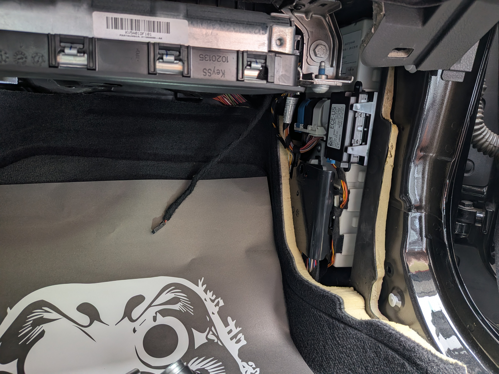

職人工法實錄：精密數據在電路架構中的重構過程
超越「配鑰匙」的極限：電路級的維修
在極致核心的工作室中，我們處理的每一塊 BMW 模組都像是一件藝術品。透過專業技術對接，我們能直接訪問底層記憶晶片與微控制器內部的數據。


職人工法實錄：精密數據在電路架構中的重構過程
在極致核心的工作室中，我們處理的每一塊 BMW 模組都像是一件藝術品。透過專業技術對接，我們能直接訪問底層記憶晶片與微控制器內部的數據。